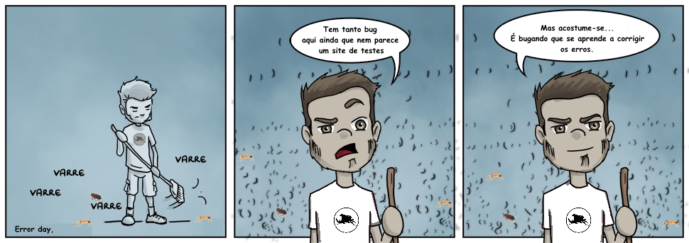
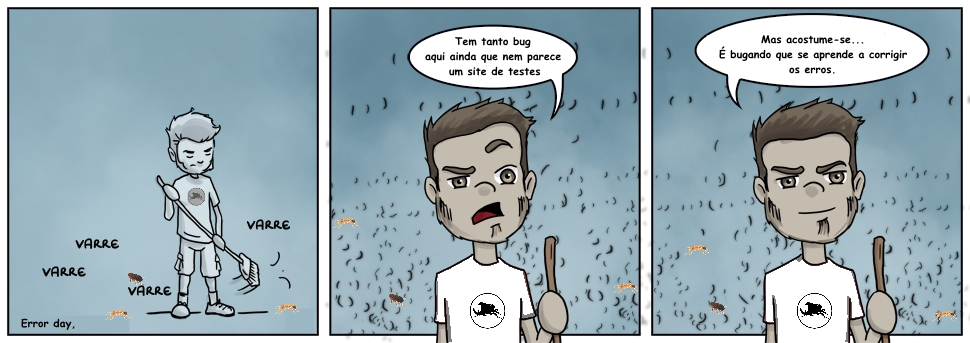

Este site foi criado com o intuito de ser utilizado em aulas, vídeo aulas e treinamento de testes e qualidade de software. Sinta-se à vontade para utilizar em treinamentos, estudos, indicação à iniciantes e também à colaborar conosco.
Recomendações
Pegue um caderno, um lápis e prepare o trafego de dados.
Guia Automação de Testes
Passo 1 - Guia
Antes de você começar a brincar, a sair automatizando tudo ai na vida, leia um pouco sobre a história dos Testes de software.
Nós preparamos um resumo de marcos históricos.
Realize os passos do Guia antes de pular pro passo 2 da automação.
Passo 2 - HTML
Aprender html é importantíssimo para automação de testes. Para o trabalho na área de testes de software é muito importante
conhecer a tecnologia utilizada por sua empresa, seja ela Java; .Net; PHP; Ruby; Phyton; enfim, sabendo quais componentes cada
linguagem utiliza no sistema, é um passo para se levantar possíveis testes a serem executados e provavelmente vários erros.
Você verá neste passo, algumas dicas para aprender sobre HTML e CSS.
Indicamos o Code Academy para aprender algumas técnicas para programação,
técnicas estas que você utilizará no dia a dia de automação de testes.
Após estudar sobre HTML, procure uma ferramenta chamada Firebug que é um complemento do Firefox.
Visto HTML e navegando no firebug, leia sobre XPath.
Code Academy - Principal HTML
A indicação é que você estude algumas tecnologias, e você pode ir melhorando gradativamente seu conhecimento.
O curso de HTML, da code academy, tem o que
você precisa para aprender o básico.
Duração: 7 Hours - Estimated Course Time.
Code Academy - Auxiliar Banco de Dados
O curso de SQL da codeacademy, vai te dar
um básico de banco de dados, que você utilizará a vida toda em testes de software.
Duração: 3 Hours - Estimated Course Time
Code Academy - Auxiliar para testes unitários com JUnit
O curso de Java da codeacademy, vai te dar
um básico de Java, que você conseguirá iniciar o mundo em automação com JUnit. Nós aconselhamos você à ler um pouco e pesquisar
sobre orientação a objetos também.
Duração: 4 Hours - Estimated Course Time
Para auxiliar seus estudos com Java, recomendamos este Artigo da Devmedia, com uma introdução sobre JUnit, artigo para automação de testes funcionais com Selenium WebDriver.
Code Academy - Auxiliar para testes web
O curso de Javascript, auxilia quem tem sistemas
feitos em javascript.
Duração: 10 Hours - Estimated Course Time
Code Academy - Auxiliar para realização de testes em API
curso de APIs
Duração: depende de suas escolhas.
Passo 3 - Links Recomendados
Os links recomendados vão te dar vários conceitos sobre testes automatizados, com várias tecnologias e ferramentas.
Recomendações
No próximo passo vamos ver bastante coisa sobre Selenium. Que praticamente é a base pra várias ferramentas de automação.
Se você quiser aprender sobre automação mobile, inicie seus estudos pelo selenium, depois evolua para trabalhar com APPIUM.
Se você quer realizar testes de integração com Webservices, procure sobre SoapUI.
Se você quer realizar testes de performance procure sobre JMeter.
Passo 4 - Selenium
Descrição em construção [você quer informar erros e dar sugestões? Informe aqui no nosso Bug-tracker: Bugou 4ALL Tests!]
Selenium IDE
em construção - aguarde [você quer informar erros e dar sugestões? Informe aqui no nosso Bug-tracker: Bugou 4ALL Tests!]
Selenium Builder - Selenium Grid - Selenium Wrapper
O Selenium possui algumas ferramentas que são complementares. O Selenium Builder, visto no sudeste asiático como substiuição do Selenium IDE. O Selenium Grid executa o script selenium em vários browser paralelamente. E o Selenium Wrapper, utilizado para automatizar testes usando VBA.
Selenium Builder
em construção - aguarde [você quer informar erros e dar sugestões? Informe aqui no nosso Bug-tracker: Bugou 4ALL Tests!]
Selenium Grid
em construção - aguarde [você quer informar erros e dar sugestões? Informe aqui no nosso Bug-tracker: Bugou 4ALL Tests!]
Selenium Wrapper
Selenium Wrapper é uma ferramenta que utiliza o Selenium para que seja possível automatizar a navegação web usando a linguagem do excel e VBA
Selenium RC(Server)
em construção - aguarde [você quer informar erros e dar sugestões? Informe aqui no nosso Bug-tracker: Bugou 4ALL Tests!]
Selenium Webdriver
O WebDriver é uma API que permite a execução de ações nos navegadores em que é suportado.
Por ser uma API, ele é integrado ao Selenium, que é um framework que permite a execução testes automatizados em aplicações web.
O blog da Take.net trouxe algumas dicas para aprender o selenium webdriver e são estas dicas que vamos colocar neste passo:
Passo 5 - Exercícios
Em breve teremos exercícios para você realizar.
Links Recomendados
Introduções
Introdução à automação de testesAprendendo automação sem cursos caros
Níveis de maturidade em automação de testes
Teste de Unidade
Teste de unidade para quem não sabe nada de programaçãoSelenium
Introdução ao SeleniumIntrodução ao Selenium IDE
Mobile
Automação de Teste com Android - Parte 1Introdução ao Robotium
Performance/Desempenho
Destilando JMeter I: Introdução e ConceitosDestilando JMeter II: Vamos escrever testes!
Linguagens
Dicas de Ruby para TestersDicas
Dicas de GIT para TestersEste é um produto:
 
